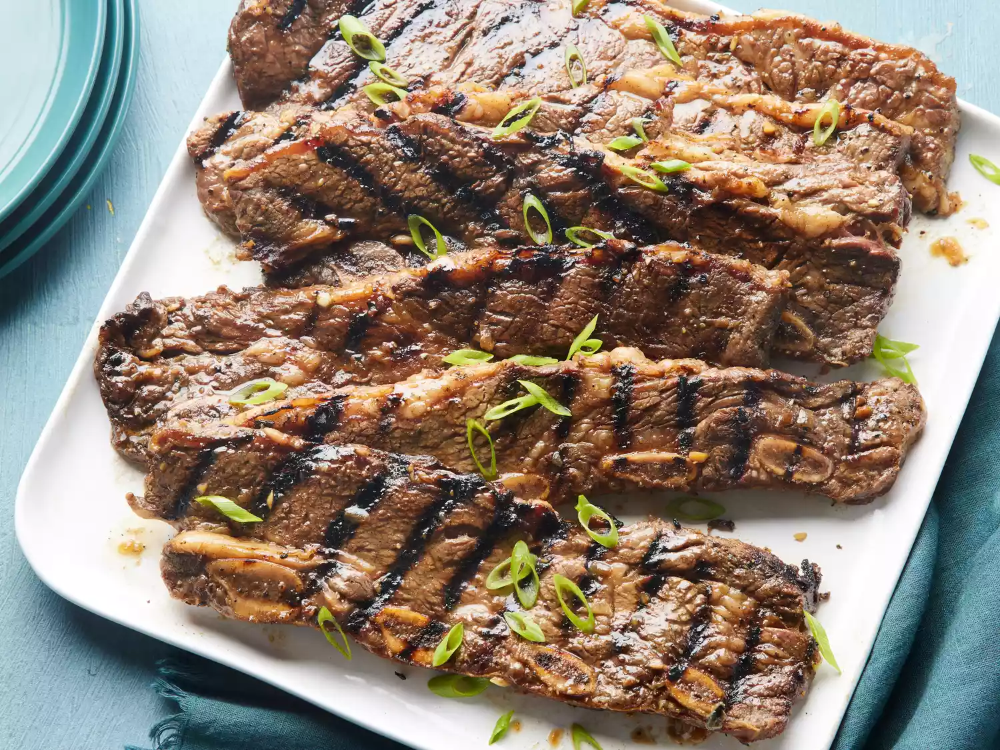

Home
Galbi (Korean BBQ Short Ribs)

Description
This is an easy way to make Korean short ribs. You can also substitute chicken breast or sliced rib-eye for the short ribs.
If you use chicken or rib-eye, you must add thinly sliced green onion tops. This can also be broiled in the oven for the same amount of time.
Ingredients
- 3/4 cup soy sauc0e
- 3/4 cup water
- 3 tablespoons white vinegar
- 2 tablespoons sesame oil
- 1/2 large onion, minced
- 1/4 cup minced garlic
- 1/4 cup dark brown sugar
- 2 tablespoons white sugar
- 1 tablespoon black pepper
- 3 pounds Korean-style short ribs (beef chuck flanken, cut 1/3- to 1/2-inch-thick across bones)
Steps
- Pour soy sauce, water, vinegar, and sesame oil into a large, non-metallic bowl.
Whisk in onion, garlic, brown sugar, white sugar, and pepper until sugars dissolve.
- Submerge ribs in marinade; cover the bowl and refrigerate 7 to 12 hours -the longer, the better.
- Preheat an outdoor grill for medium-high heat. Remove ribs from marinade and shake off excess; discard marinade.
- Cook on the preheated grill until the meat is no longer pink, 5 to 7 minutes per side.